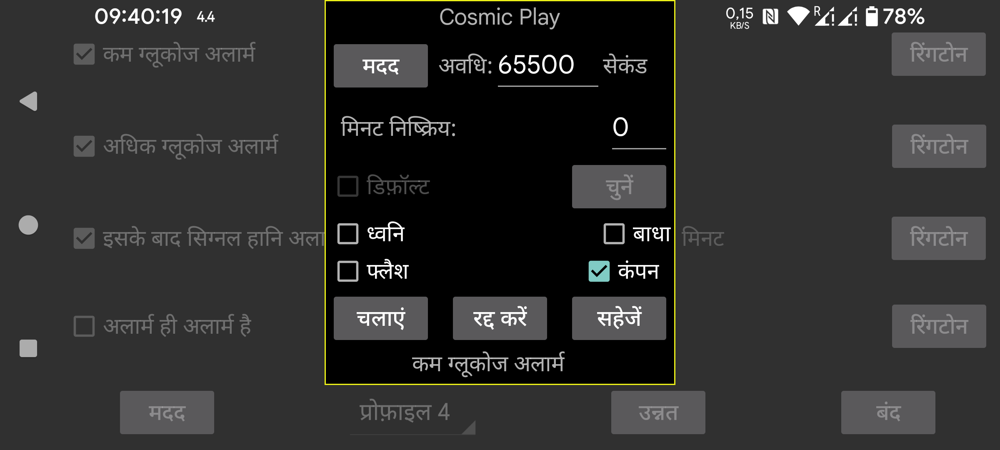

ar be de es fr hi it nl pl pt ru tr uk uz zh en
एक अलार्म या सूचना के लिए कौन सी रिंगटोन बजानी है और कितने सेकंड के लिए चुनें।
निष्क्रिय किए गए मिनट: यदि कम या अधिक ग्लूकोज स्तर जारी रहता है, तो अलार्म तुरंत फिर से नहीं बजेगा। यदि स्थिति जारी रहती है तो आप निर्दिष्ट कर सकते हैं कि कितने मिनट बाद अलार्म फिर से उत्पन्न होना चाहिए।
ध्वनि: ध्वनि बनाएं।
डिफ़ॉल्ट: डिफ़ॉल्ट ध्वनि का उपयोग करें।
चुनें: एक रिंगटोन चुनें। कुछ Samsung फोन पर पूर्व-इंस्टॉल किया गया रिंगटोन पिकर ऐप क्रैश हो जाता है, इसलिए आपको एक अलग रिंगटोन ऐप इंस्टॉल करना होगा जिसका उपयोग अन्य ऐप्स द्वारा किया जा सके, उदाहरण के लिए: https://play.google.com/store/apps/details?id=com.centralparkapps.ringo.ringtones या https://apkcombo.com/ringtone-picker/de.kumpewo.ringtones
कंपन: कंपन
बाधा: यदि "Do not Disturb" चालू है, तो एक अलार्म बजाने से पहले इसे बंद करें। यदि Juggluco के पास इसके लिए आवश्यक अनुमति नहीं है, तो आपको Juggluco को यह अनुमति देने के लिए एक Android सेटिंग्स स्क्रीन पर भेजा जाएगा। "Do not Disturb" चालू करके और चलाएं दबाकर, आप परीक्षण कर सकते हैं कि क्या अलार्म "Do not Disturb" के दौरान काम करेंगे। Juggluco के पिछले संस्करण में, अलार्म के बाद "Do not Disturb" फिर से चालू कर दिया जाता था। वर्तमान संस्करण में ऐसा नहीं है, क्योंकि इसका एक अनपेक्षित प्रभाव था कि जब एक अलार्म बजता था एक स्वचालित "Do not Disturb" अवधि के दौरान, यह स्थिति स्वचालित रूप से बंद नहीं होती थी। यदि आप “Do not Disturb” के दौरान अलार्म सुनना नहीं चाहते हैं, तो आपको शायद पिछली स्क्रीन में “अलार्म ही अलार्म है” को भी अनसेट करना होगा।
फ्लैश: टॉर्च फ्लैश लाइट वाले स्मार्टफ़ोन में समान सेकंड की संख्या के लिए फ्लैश का विकल्प है। तब सहायक जब रिंगटोन की अनुमति नहीं है और फ्लैश लाइट के संबंध में कोई स्पष्ट नीति नहीं है।